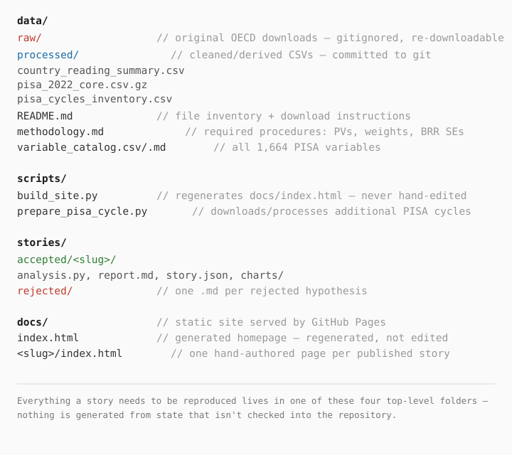
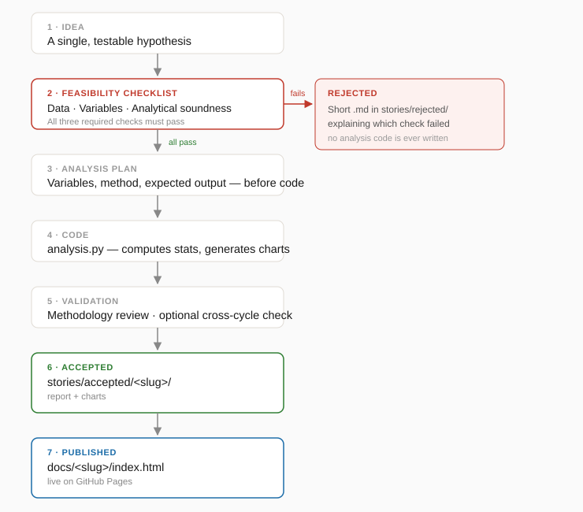
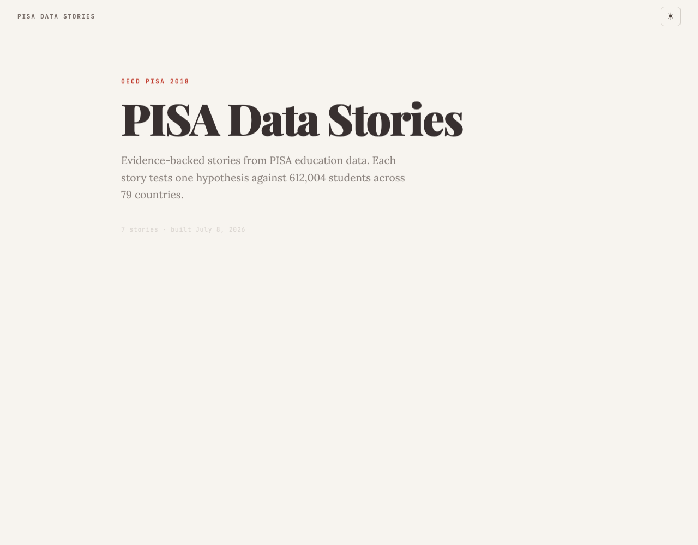
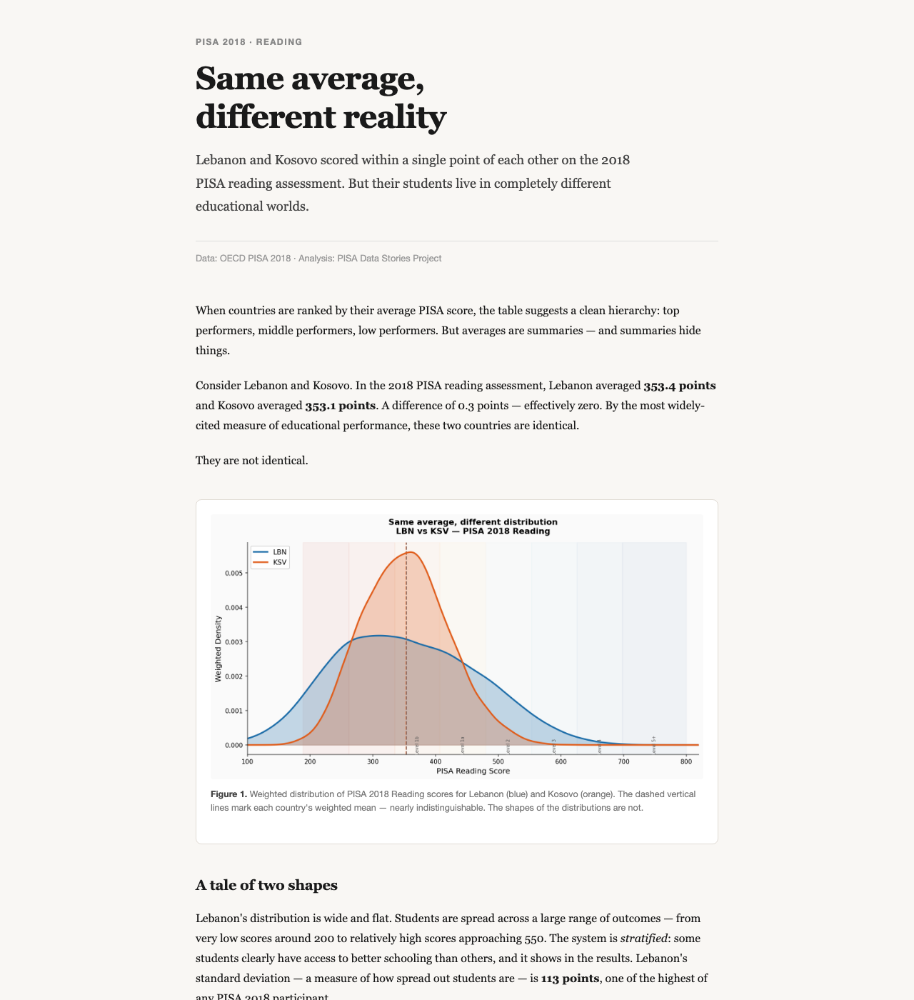

Behind the Scenes · Methodology
How I used Claude to turn PISA
microdata into published data stories
Everyone assumes the hard part of AI-assisted research is getting the AI to find something interesting. It isn't. The hard part is building something that tells you, reliably, when it hasn't — and this is the story of building that.
Ask Claude to "find something interesting" in half a million student survey records and it will. Every time. That's the problem, not the feature. Large models are extremely good at producing a confident, fluent, plausible-sounding pattern out of almost any dataset you hand them — a correlation, a country comparison, a causal-sounding sentence — whether or not that pattern would survive five minutes of scrutiny. The genuinely hard engineering problem in this project was never generating hypotheses. It was building a system that could catch its own AI collaborator being confidently wrong, before a wrong finding ever reached a published page.
This is the story of building that system: a repository, a set of rules, and a workflow that turned Claude from something you prompt into something closer to a disciplined research assistant — one that has to show its work, fail fast on bad ideas, and admit uncertainty instead of papering over it. It happened to be built on OECD PISA education data, but the system itself is the actual subject.
Why PISA, and why it fights back
PISA microdata is a good stress test for exactly this problem, because it's much harder to
work with than it looks. The OECD's 2018 questionnaire alone covers
1,664 variables across student, school, and teacher files. The core
student file — SPSS_STU_QQQ.zip — is 478 MB and holds
612,004 students across 79 countries. None of that is the hard part.
The hard part is that PISA doesn't give you one score per student — it gives you
ten plausible values per subject (PV1READ–PV10READ,
and the same for math and science), a statistical device for representing uncertainty in
each student's estimated ability. Averaging just one of them and calling it "the score"
is a common, quiet way to get a PISA analysis wrong. Every student also carries a
survey weight (W_FSTUWT) and 80 replicate weights for
computing standard errors correctly, because PISA's sample isn't a simple random sample —
it's a stratified, clustered design. Add country-specific codebooks, inconsistent variable
names across cycles, and the temptation to compare countries as if a half-point difference
means something, and it's easy to see how an AI moving fast could produce something that
reads as rigorous and isn't.
Why Claude, specifically
None of what follows required a chatbot. It required something that could hold an entire project's context at once — a 1,664-variable catalog, a methodology document, and a growing set of precedents from prior stories — and reason across all of it consistently. A handful of practical properties made Claude Code the right fit for this, not as a matter of preference but of what the work actually demanded:
- Long-context reasoning. A single feasibility check means cross-referencing a hypothesis against
variable_catalog.csv,data/methodology.md, and whatever the raw SPSS file actually contains — three sources, one judgment call. - Repository awareness.
AGENTS.mdonly works if it's actually read and followed before every hypothesis, not re-explained by hand each session. - Iterative code editing. An
analysis.pyscript rarely survives its first draft — weighting gets corrected, a chart gets restyled, a threshold gets adjusted after seeing the actual distribution of pairs. - Structural consistency across many files. Every story touches five or six files across two directories —
analysis.py,report.md,story.json, chart PNGs, and a hand-authoreddocs/<slug>/index.html. Keeping that pattern identical across every published story without drift is a coordination problem as much as a writing one.
Put simply: the project needed an editor that could read the whole repository's history and conventions before writing a single new file, and revise its own code in place rather than starting fresh each time. That's an infrastructure requirement, not a marketing claim.
Building the foundation
Before any hypothesis was tested, the repository was organized around one rule: a reader — or a future version of Claude — should be able to reproduce any story from what's committed to the repo, without re-deriving anything from memory.
Raw PISA files (data/raw/) are gitignored — they're hundreds of megabytes,
OECD-downloadable, and not something a repository should carry. Everything derived from
them that a story actually depends on — country summaries, cleaned extracts, the cycle
inventory — lives in data/processed/ and is committed, so a story's
numbers stay reproducible even without re-downloading gigabytes of SPSS files.
data/methodology.md and variable_catalog.csv existed before the
first story did, precisely so that "which variables exist" and "how must plausible values
be pooled" were answered once, not re-litigated per hypothesis.

Figure 1. The four top-level folders and what belongs in each.
Reproduced from the project structure documented in AGENTS.md.
stories/ and docs/ split the same story into two different jobs.
stories/accepted/<slug>/ holds the reproducible parts — the analysis
script, the technical report, the chart-generating code. docs/<slug>/
holds the published artifact — a self-contained webpage a reader sees, with no build step
required to view it. Keeping them separate means a story's evidence and its presentation
can be reviewed independently.
Early attempts: the workflow nobody designed up front
None of this shipped fully formed. The project's git history — which is the only honest record of how it actually happened — shows a workflow that was rewritten repeatedly in its first few hours, each revision closing a gap the previous version had just exposed.
e90e4f6 Initialize PISA data story project
376f6ad Add story: same-mean-different-distribution (Lebanon vs Kosovo)
e46d5c5 Update AGENTS.md: expand workflow steps and add skills rule
4319c45 Add story: the-school-lottery (Netherlands vs Finland ICC analysis)
35d4fbd Add PISA Data Stories website
8f71359 Add README and publishing workflow to AGENTS.md
78cac7f Fix chart paths for GitHub Pages; default to light mode
8c0fdca Add cross-cycle PISA infrastructure (2022 installed; 2012/2015 supported)
The original AGENTS.md was four short sections: a one-line Goal, a four-step
Workflow ("verify the required variables exist," "write the analysis code," "generate a
publishable webpage"), and a short Rules list. There was no feasibility table, no
pass/warn/fail scoring, and — notably — no rule yet against inventing unsupported conclusions.
It assumed that verifying variables existed was most of what "feasibility" meant.
It wasn't. The commit that shipped the project's first story —
same-mean-different-distribution — carries this line in its own message:
"Also updates AGENTS.md with feasibility checklist changes from earlier sessions."
The Required/Quality Checks tables, the explicit Analytical Soundness check, and the
"do not invent variables or unsupported conclusions" rule were not designed in the
abstract beforehand — they were written mid-project, in response to whatever went wrong
or felt too loose while that very first hypothesis was being tested.
Passing the checklist still left a gap between "statistically correct" and "a report a stranger would want to read." The next revision replaced a single vague step — "write a clear report" — with four explicit ones invoking Claude Code's own skills for methodology review, narrative storytelling, and page design, plus a rule that those skills should complement this project's workflow, not override it.
Here's a detail that didn't make it into any narrative because it's a little inconvenient:
the first two stories were published before a homepage existed to link them
together. scripts/build_site.py and docs/index.html arrived in a
separate commit afterward, and the publishing steps — story.json, the build
script, the git push — were folded into AGENTS.md only once that pipeline
was real. The workflow document was documenting a system that already existed, not the
other way around.
The remaining gap was time. Every finding so far rested on a single PISA cycle — nothing tested whether a pattern held up when the world moved on. A week after the first session, PISA 2022 data was installed and an optional cross-cycle robustness check was added to the workflow, deliberately scoped as optional so it wouldn't become required overhead on stories where a second cycle wouldn't add real confidence.
None of these revisions were scheduled. Each one exists because the version before it broke or fell short on a real hypothesis, not a hypothetical one.
Creating the workflow that stuck
What those five revisions converged on is the constitution the project still runs on:
AGENTS.md, a repository file Claude reads before touching any hypothesis.
It was never "analyze the data and see what you find." That prompt produces exactly what
you'd expect from an unconstrained pattern-matcher pointed at 1,664 variables: a confident
correlation, no examination of whether it survives scrutiny, and no record of the ideas
that didn't work.
Instead, AGENTS.md requires a feasibility pass before a single line of analysis
code is written. Three checks are non-negotiable:
| Required check | Question |
|---|---|
| Data Availability | Can the hypothesis be tested using the available PISA 2018 data? |
| Variable Availability | Are all required variables present in the downloaded datasets? |
| Analytical Soundness | Can it be tested with an appropriate method, without unsupported causal claims? |
A single failing check stops the analysis immediately — a short markdown file goes in
stories/rejected/ explaining why, and no analysis code is written at all.
A second, softer table follows: Story Potential, Novelty, and Reproducibility. These don't auto-reject anything — they're where judgment enters. A hypothesis can pass every required check and still be weak on novelty; the rule is to say so explicitly and let the human call it, not to quietly bury the ambivalence.
“Do not invent variables or unsupported conclusions. When uncertain, explicitly state the limitation instead of making assumptions.”
— AGENTS.md, Rules
That single rule is doing most of the work in this project. It's why every published report on this site has a Limitations section, why the same-mean-different-distribution story states plainly that it computes no standard errors and therefore treats mean differences under ~5 points as noise, and why an AI that could easily generate a fluent causal story about why Lebanon and Kosovo differ was told, in effect, not to.
If a reader wants the single clearest example of the workflow's actual philosophy, it's
the opening lines of AGENTS.md itself — not a marketing description of it,
the real text Claude reads before anything else happens:
AGENTS.md, Goal:Test one PISA data story hypothesis at a time.
Determine whether the available PISA data can support the hypothesis. If it
can, produce a complete, evidence-backed data story. If it cannot, reject
the idea quickly with a short explanation.Two sentences. One path forward, one path out. Everything else in this article is really just the machinery built to make that second sentence — reject the idea quickly — something Claude could actually act on, instead of a nice intention nobody enforces.
The story pipeline
End to end, one hypothesis moves through seven stages. The feasibility checklist above is stage two — the only stage with a hard exit.

Figure 2. The full workflow defined in AGENTS.md. A failed
required check exits directly to stories/rejected/; nothing downstream of
that box runs.
stories/rejected/ exists for the branch that never reaches the pipeline's
later stages: a hypothesis whose data doesn't exist, whose variables aren't in the
catalog, or whose method would require an unsupported causal claim. The rule is that a
failed Required Check produces a short markdown file explaining which check
failed and why — a paragraph, not a postmortem — so that a rejected idea still leaves a
trace instead of just disappearing from the conversation. A rejection is meant to be
exactly as legitimate an outcome as an acceptance; the checklist's entire job is to make
that outcome cheap enough that it actually gets used instead of quietly avoided.
Stage three — the analysis plan — is a written commitment to a method before
code exists: which variables, which technique, what the output should look like, and
why that approach beats the alternatives. The speed-struggle-quitting story's
plan, for instance, spells out exactly why a within-item median time-split was used
instead of a fixed cutoff, and why partial-credit responses were grouped with "wrong"
rather than invented as a third category. That kind of decision, written down before
the chart exists, is much harder to quietly reverse-engineer to fit a result after the fact.
Publishing the first story
This is the same evening from the version history above — the hours during which
Version 1 of AGENTS.md turned into Version 2 mid-hypothesis. The hypothesis
that forced that revision was Same Mean, Different Distribution: the
finding that Lebanon and Kosovo scored within a single point of each other on PISA 2018
Reading — 353.4 vs. 353.1 — while having almost nothing
else in common. It's the clearest example of the pipeline in motion, because it's the
hypothesis that built the pipeline.
Illustrative feasibility pass
The checklist above is produced as conversation output, not saved to a file — so nothing below is a stored transcript. It's a reconstruction, built from the actual variables and methods the finished analysis used, to show what clearing the checklist looked like for this specific hypothesis.
| Check | Result | Reason |
|---|---|---|
| Data Availability | ✓ | PISA 2018 Reading is the primary domain; all 79 countries administered it. |
| Variable Availability | ✓ | PV1READ–PV10READ and W_FSTUWT exist in SPSS_STU_QQQ.zip for every country. |
| Analytical Soundness | ✓ | Weighted means, SDs, and quantiles per plausible value, pooled per Rubin's rules — a descriptive comparison, no causal claim required. |
With the required checks clear, the plan was simple: compute weighted mean, SD, and percentiles (P10/P25/P50/P75/P90) per country across all 10 plausible values, then search all 79C2 country pairs for ones with nearly identical means but very different spreads.
stories/accepted/same-mean-different-distribution/analysis.py:MEAN_THRESHOLD = 5 # max difference in mean scores
SPREAD_THRESHOLD = 20 # min difference in P90-P10 range
for i in range(len(s)):
for j in range(i + 1, len(s)):
a, b = s.iloc[i], s.iloc[j]
mean_diff = abs(a["mean"] - b["mean"])
spread_diff = abs(a["p90_p10_range"] - b["p90_p10_range"])
if mean_diff < MEAN_THRESHOLD and spread_diff > SPREAD_THRESHOLD:
pairs.append({...})
# Selected pair: the one with the greatest spread difference
best = pairs_df.sort_values("spread_diff", ascending=False).iloc[0]That search — not a hunch — is what surfaced Lebanon and Kosovo out of 75 qualifying pairs. The chart below is the actual output of that script.

Figure 3. Weighted PISA 2018 Reading distributions for Lebanon (SD 113.3) and Kosovo (SD 68.3) — nearly the same mean, very different shape. Reused directly from the published story's own chart output.
Lebanon · P90–P10 range
296
points — wide, stratified
Kosovo · P90–P10 range
177
points — narrow, uniform
From there the workflow moved exactly as diagrammed: the analysis script generated the
remaining charts, a technical report (report.md) documented method and
limitations, and only once that report existed did work begin on
docs/same-mean-different-distribution/index.html — the page a reader
actually sees, rewritten in narrative form without changing a single underlying number.
Scaling into a repeatable system
A workflow that only works once isn't a workflow, it's a lucky session. The real test came after Same Mean, Different Distribution: could the same shape — checklist, plan, code, validation, publish — produce a second finding, then a third, without a fresh round of trial and error each time? It could. Every story on this site since has gone through the identical sequence, and the one genuinely new capability added along the way — the optional cross-cycle robustness check — was deliberately built as an appendix bolted onto an existing story's report, not a reason to rebuild the pipeline. Several already-published stories later had a robustness appendix added retroactively, which is itself a small proof that the original structure held up under reuse.
Claude's role vs. my role
It would be easy to read a site like this and assume the AI just did it. It didn't. Within that repeated sequence, the two of us were doing genuinely different jobs — Claude proposing angles, writing analysis code, and drafting the narrative; me choosing which questions were worth asking, checking that the statistics actually meant what the draft claimed, and deciding what was allowed to go live.
| Stage | Claude | Me |
|---|---|---|
| Workflow design | Follows the checklist and rules in AGENTS.md | Wrote and maintain AGENTS.md itself |
| Choosing what to test | Proposes angles and framings within a hypothesis | Selected which hypotheses were worth a feasibility pass at all |
| Feasibility checks | Runs the Required/Quality checks, states results | Made the judgment call on every weak quality flag |
| Analysis code | Writes analysis.py, computes stats, generates charts | Reviewed the method against data/methodology.md before trusting output |
| Numbers in the report | Drafts report.md from its own computed output | Spot-checked reported figures against the actual CSVs before publishing |
| Narrative & page | Writes the story prose and the page's HTML/CSS | Approved tone, accuracy, and what got emphasized |
| Publishing | Can run build_site.py | Own and run git commit / git push — nothing goes live without that |
| Repository upkeep | Follows existing structure | Decide when the structure itself needs to change (e.g. adding the cross-cycle system) |
None of those rows are adversarial. The whole point of the workflow was to make the collaboration legible — so that if a published number turned out to be wrong, it would be obvious which side of that table to go check first.
Publishing
A finished story becomes a live page through a fixed sequence, not an ad hoc one — the same loop, closed, every time:
Concretely, the last three steps of that loop are:
- Write
stories/accepted/<slug>/story.json— title, subtitle, description, date, tags. - Write the story page itself at
docs/<slug>/index.html. - Run
python scripts/build_site.py, which regeneratesdocs/index.htmlfrom everystory.jsonit finds and copies each story's charts intodocs/<slug>/charts/. git add . && git commit && git push— GitHub Pages redeploys automatically.
“The homepage (docs/index.html) is always generated — never edit
it by hand.”
— AGENTS.md, Publishing Workflow
That rule isn't cosmetic. This page's own link from the homepage exists because it was
added to scripts/build_site.py's template, not because someone hand-edited
docs/index.html — which would have been silently overwritten the next time
a story was published. The screenshots below are the real, current site, captured directly
from the repository's HTML.

Figure 4. The generated homepage — every card on it comes from a
story.json file, assembled by build_site.py.

Figure 5. A published story page — hand-authored HTML that
build_site.py never touches once it exists.
What surprised me
Structure did more work than any prompt. I expected the leverage to come
from phrasing — the right instruction, worded carefully. It didn't. data/README.md
telling future sessions to "use the smallest dataset that covers your needs," or
methodology.md existing before any hypothesis did, prevented more bad analysis
than any individual sentence of instruction to Claude ever did.
Most of the real effort was in framing the question, not running the code.
The clearest evidence is sitting in the repository: speed-struggle-quitting/PLAN.md
spends most of its length reasoning about how to classify a single ambiguous item type and
why a within-item median time-split beats a fixed cutoff — decisions made before
analysis.py existed at all. The code, once the question was actually well-posed,
was usually the fast part.
Publishing was not the lightweight last step I expected. A story's
docs/<slug>/index.html page routinely runs 400 to over 1,100 lines —
comparable to, and sometimes longer than, the analysis script that produced its numbers.
Turning a validated finding into something a stranger would want to read took real,
separate effort, not a template fill-in.
Constraints made Claude more useful, not less. I expected the feasibility checklist to slow things down. Instead it seemed to cut rework — a hypothesis that would have needed rewriting after a wrong analytical approach got caught, questioned, or reframed before any code existed to unwind.
Reproducibility paid off later, not immediately. Keeping
analysis.py faithful and self-contained felt like overhead in the moment. It's
the only reason a robustness appendix could be bolted onto an already-published story a week
later without re-deriving the original finding from scratch.
Lessons learned
AI output still needs a reviewer with domain judgment. Claude can compute
a weighted percentile correctly and still pick a framing that overstates it. The check that
catches that isn't a script — it's someone who reads data/methodology.md closely
enough to notice when a report's language has drifted past what the numbers support.
Reproducibility is a design decision, not an afterthought. Every accepted
story keeps its analysis.py next to its report.md next to its charts,
in the same folder, committed together. That was chosen before the first story was written,
specifically so a claim could always be traced back to the code that produced it.
Survey methodology punishes shortcuts. Ten plausible values, one survey
weight, 80 replicate weights, and a stratified sample design exist because a single point
estimate per student would understate uncertainty. data/methodology.md exists
because that's easy to forget mid-analysis and hard to notice after the fact.
A striking correlation is not a mechanism. Nothing on this site claims to explain why Lebanon and Kosovo differ, or why some disadvantaged schools beat the odds — the data can show that patterns exist and describe their shape; it can't, on its own, adjudicate cause. Every report's Limitations section exists to say that plainly instead of implying otherwise.
Constraints produce better output than open-ended prompting. The version of this project that worked wasn't "explore this dataset and tell me something interesting." It was a checklist with hard failure conditions, a required written plan before code, and an explicit instruction to state limitations instead of guessing. The workflow is more restrictive than a free-form prompt — and every published story exists because of it, not despite it.
What's next
Very little of AGENTS.md's actual structure is PISA-specific, even
though its wording currently is — the Required Checks table literally asks about "the
available PISA 2018 data." But the shape underneath that wording (does the data exist,
do the variables exist, is the method sound) isn't about PISA at all, and neither is the
plan-before-code step, the accepted/rejected split, or the publishing pipeline through
build_site.py. The genuinely PISA-specific knowledge lives in a smaller,
separable place: data/methodology.md (plausible values, survey weights) and
the variable catalog. Swap those for a different public dataset's own quirks, and the
shape of the workflow — checklist, plan, code, validation, publish — doesn't obviously
need to change.
That's speculation, not a claim already tested — this project has only ever run against PISA. But the parts that made it trustworthy here weren't about test scores or plausible values specifically; they were about refusing to let an AI collaborator skip the step where it might be wrong. Any dataset complicated enough to tempt a fast, confident, unverified answer is a candidate for the same treatment. This project reads less like a finished experiment and more like the first run of a template — one built on PISA because PISA happened to be complicated enough to need it.
AGENTS.md for the workflow, rules, and their revision history,
report.md and analysis.py for the Lebanon/Kosovo numbers,
data/README.md for dataset sizes and variable counts, and git log
for the version history and commit timestamps. The one exception — the reconstructed
feasibility table — is labeled as such where it appears. No repository feature, prompt,
Git history, or statistic here was invented for the sake of the narrative.